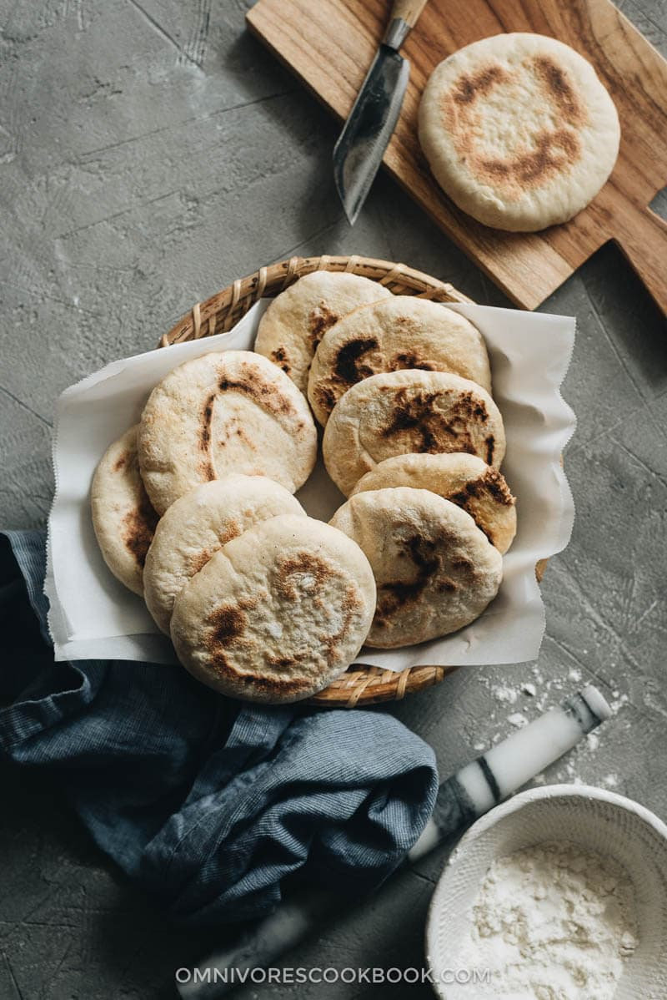

Homemade Grilled Flatbreads
Original Recipe from Omnivore's Cookbook:
How to Make Flatbread (Easy, Fast, 2-Ingredient)
Return to homepage

Description
Growing up in a Chinese family in which the parents make dumplings and buns from scratch, I’m embarrassed to admit that
I’m pretty bad at making anything dough-related. Whether it’s dumpling wrappers, noodle dough, or pancakes,
I feel extremely intimidated before starting a cooking project like this.
But this recipe is an exception.
It is such a simple recipe that even I feel confident making, all the time. Not only does it take no time to prepare, but the simple ingredients make it a no-fail recipe.
Ingredients
- 2 1/2 cups (400 grams) all-purpose flour , plus extra to dust hands
- 1 teaspoon Instant dry yeast
- 1 cup (240 ml) room-temperature water
Steps
Prepare the dough
- Make the dough by hand - Put the flour in a large bowl, add dry yeast, and mix well with a fork.
Add water and mix with a fork or a pair of chopsticks, stirring in a clockwise direction, until water is fully incorporated with flour.
Dust both hands with flour and start by using one hand to knead until dough begins to form.
The dough should be soft, but shouldn’t stick to the bottom of the bowl. Blend in more flour if the dough sticks to the hands,
1 teaspoon at a time. Dust a cutting board or working surface with flour and transfer the dough onto the cutting board.
Continue kneading the dough for a few minutes, until the surface becomes smooth.
- Make the dough using a food processor or mixer - Add the flour and the yeast into the food processor (or mixer), pulse a few times to mix well.
Add the water and mix until it forms a dough. Transfer the dough onto a dusted working surface. Knead for a few minutes until the surface
becomes smooth.
- Make the dough using a Kitchenaid - Add the flour and the yeast into the Kitchenaid bowl. Mix on low for a few revolutions.
Gradually add the water. Mix until it forms a smooth dough, 10 minutes or so.
Making the bread
- Transfer the dough to a dusted bowl. Cover the bowl with plastic wrap. Rest the dough for 10 to 15 minutes (*Footnote 1).
- Dust both hands again and knead the dough a few times. Divide the dough into 10 equal parts, and shape each one into a ball by hand.
Transfer the dough onto a dusted tray and cover with plastic wrap. Let rest for another 10 minutes.
- Dust both hands and the working surface. Place one dough ball on the working surface, then press it with the palm into a round shape.
Use a rolling pin to flatten the dough into a 1/4 inch (6-mm) thick round disk. Set aside. Shape the rest of the dough balls the same way.
- Heat a cast iron pan or nonstick skillet with a few drops of oil over medium heat. When skillet is hot, turn to medium low heat.
Place a round piece of dough into the skillet and cover the pan (cook one or two doughs at a time, depending on the size of the skillet).
Use a spatula to turn the dough occasionally, 1 to 2 minutes per side, and cook covered during the process, until both sides turn golden brown
and the bread is inflated. Transfer finished buns to a plate or cooling rack.
- When the buns have cooled down a bit, use a knife to split them horizontally, half-way through. Separate the inside of the bun with your fingers,
taking care not to tear the two layers apart. The bun should form a pocket.